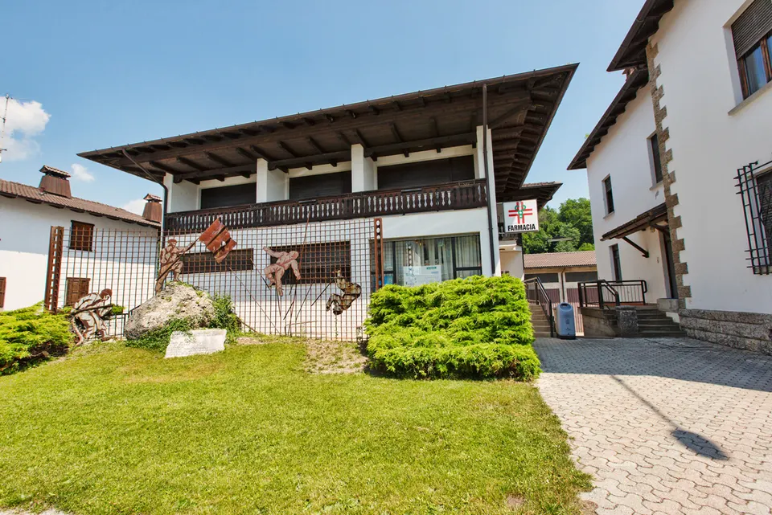
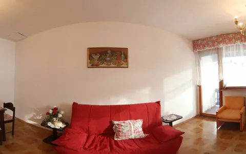

Casa dal Miedi
Ferienwohnung in Mediis · Karnien
Wohnung mit großer Terrasse im Zentrum von Mediis, neben der Rezeption und den Einrichtungen des Dorfes.
Im ersten Stock eines neueren Gebäudes, neben dem Rathaus von Mediis und über der Dorfapotheke: sehr praktisch, mit Bar, Tankstelle und Bushaltestelle ganz in der Nähe und der Rezeption des Albergo Diffuso in derselben Straße.
Zwei Schlafzimmer, eines davon mit Etagenbetten, ein Wohnraum mit Kochnische, das Bad und eine große Terrasse mit Blick ins Tal.
8Betten
3★Klassifizierung
2Schlafzimmer
486m ü. M.
Ausstattung
- WLAN
- Haustiere erlaubt
- Terrasse
Fotos
22 Fotos von Casa dal Miedi
Virtueller Rundgang
Treten Sie ein – in 360°

Das Dorf
Mediis, ein Ortsteil von Socchieve
In Mediis beginnt der gleichnamige Mountainbike-Rundkurs, und auch der bekannte Anello delle Frazioni führt hier vorbei. Das Dorf, das Socchieve einst den Rang als Hauptort streitig machte, liegt zentral zu fast allen Ortsteilen und überblickt den Lauf des Lumiei, der hier in den Tagliamento…
Nationaler Identifikationscode (CIN): IT030110A1C8FJEG48
Das könnte Ihnen auch gefallen